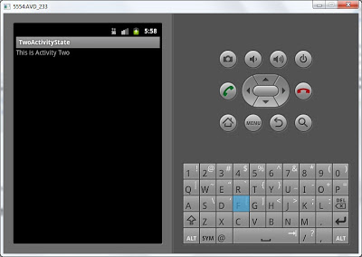
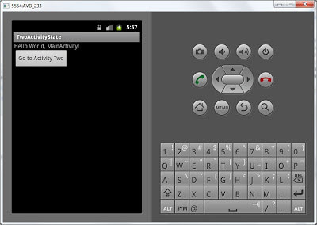
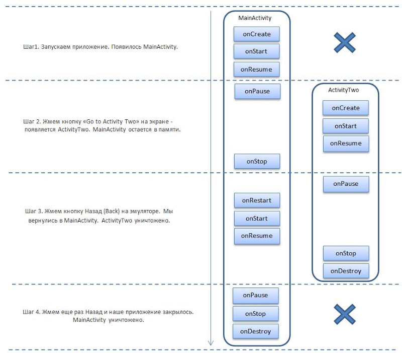

В этом уроке:
- изучаем смену состояния на примере двух Activity
На прошлом уроке мы рассмотрели, какие состояния проходит Activity за время своего существования и какие методы при этом вызываются. Но мы видели Activity только в состоянии Resumed (т.е. его видно, и оно в фокусе). На этом уроке на примере двух Activity попробуем понять, в каком случае Activity может остаться в состоянии Stopped, т.е. не видно и не в фокусе, но существует в памяти.
Создадим проект:
Project name: P0241_TwoActivityState
Build Target: Android 4.0
Application name: TwoActivityState
Package name: ru.startandroid.develop.p0241twoactivitystate
Create Activity: MainActivity
В main.xml пишем следующее:
<?xml version="1.0" encoding="utf-8"?>
<LinearLayout
xmlns:android="http://schemas.android.com/apk/res/android"
android:orientation="vertical"
android:layout_width="fill_parent"
android:layout_height="fill_parent">
<TextView
android:layout_width="fill_parent"
android:layout_height="wrap_content"
android:text="@string/hello">
</TextView>
<Button
android:layout_width="wrap_content"
android:layout_height="wrap_content"
android:text="Go to Activity Two"
android:id="@+id/btnActTwo">
</Button>
</LinearLayout> Кнопка “Go to Activity Two” будет вызывать второе Activity.
Откроем MainActivity.java и пишем туда все методы, на этот раз, включая onRestart, и в методах прописываем запись в логи. Также описываем и находим кнопку, присваиваем ей обработчик. В методе onClick пока ничего не пишем.
package ru.startandroid.develop.p0241twoactivitystate;
import android.app.Activity;
import android.content.Intent;
import android.os.Bundle;
import android.util.Log;
import android.view.View;
import android.view.View.OnClickListener;
import android.widget.Button;
public class MainActivity extends Activity implements OnClickListener {
final String TAG = "States";
Button btnActTwo;
@Override
public void onCreate(Bundle savedInstanceState) {
super.onCreate(savedInstanceState);
setContentView(R.layout.main);
btnActTwo = (Button) findViewById(R.id.btnActTwo);
btnActTwo.setOnClickListener(this);
Log.d(TAG, "MainActivity: onCreate()");
}
@Override
protected void onRestart() {
super.onRestart();
Log.d(TAG, "MainActivity: onRestart()");
}
@Override
protected void onStart() {
super.onStart();
Log.d(TAG, "MainActivity: onStart()");
}
@Override
protected void onResume() {
super.onResume();
Log.d(TAG, "MainActivity: onResume()");
}
@Override
protected void onPause() {
super.onPause();
Log.d(TAG, "MainActivity: onPause()");
}
@Override
protected void onStop() {
super.onStop();
Log.d(TAG, "MainActivity: onStop()");
}
@Override
protected void onDestroy() {
super.onDestroy();
Log.d(TAG, "MainActivity: onDestroy()");
}
@Override
public void onClick(View v) {
}
}Какие методы и в каком порядке выполняются при работе одного Activity, мы видели на прошлом уроке. Сейчас нам интересно поведение при двух Activity, поэтому создаем второе Activity. Назовем ее ActivityTwo. Вспоминаем прошлые уроки: надо создать класс с таким именем и с суперклассом android.app.Activity, и прописать новое Activity в манифест-файле. Также надо создать layout-файл, назовем его two.xml и заполним этим кодом:
<?xml version="1.0" encoding="utf-8"?>
<LinearLayout
xmlns:android="http://schemas.android.com/apk/res/android"
android:orientation="vertical"
android:layout_width="match_parent"
android:layout_height="match_parent">
<TextView
android:id="@+id/textView1"
android:layout_width="wrap_content"
android:layout_height="wrap_content"
android:text="This is Activity Two">
</TextView>
</LinearLayout>Просто TextView с текстом, чтобы было понятно, что это ActivityTwo.
Создаем класс. Код ActivityTwo.java:
package ru.startandroid.develop.p0241twoactivitystate;
import android.app.Activity;
import android.os.Bundle;
import android.util.Log;
public class ActivityTwo extends Activity {
final String TAG = "States";
@Override
public void onCreate(Bundle savedInstanceState) {
super.onCreate(savedInstanceState);
setContentView(R.layout.two);
Log.d(TAG, "ActivityTwo: onCreate()");
}
@Override
protected void onRestart() {
super.onRestart();
Log.d(TAG, "ActivityTwo: onRestart()");
}
@Override
protected void onStart() {
super.onStart();
Log.d(TAG, "ActivityTwo: onStart()");
}
@Override
protected void onResume() {
super.onResume();
Log.d(TAG, "ActivityTwo: onResume()");
}
@Override
protected void onPause() {
super.onPause();
Log.d(TAG, "ActivityTwo: onPause()");
}
@Override
protected void onStop() {
super.onStop();
Log.d(TAG, "ActivityTwo: onStop()");
}
@Override
protected void onDestroy() {
super.onDestroy();
Log.d(TAG, "ActivityTwo: onDestroy()");
}
}Не забудьте добавить запись об ActivityTwo в манифест. И теперь мы можем дописать код метода onClick в MainActivity.java, прописав там вызов ActivityTwo
@Override
public void onClick(View v) {
Intent intent = new Intent(this, ActivityTwo.class);
startActivity(intent);
}(добавляете только строки 3 и 4).
Фильтр логов должен был остаться с прошлого урока. Используем его. Если нет, то создайте фильтр по тегу States.
Все сохраним и приступим к испытаниям.
Шаг1. Запускаем приложение. Появилось MainActivity.

Логи:
MainActivity: onCreate()
MainActivity: onStart()
MainActivity: onResume()
Все, как и в прошлый раз - вызываются три метода. Activity проходит через состояния Stopped, Paused и остается в состоянии Resumed.
Шаг 2. Жмем кнопку «Go to Activity Two» на экране и появляется ActivityTwo.

Логи:
MainActivity: onPause()
ActivityTwo: onCreate()
ActivityTwo: onStart()
ActivityTwo: onResume()
MainActivity: onStop()
Давайте разбираться. Вызов MainActivity.onPause означает, что MainActivity теряет фокус и переходит в состояние Paused. Затем создается (onCreate), отображается (onStart) и получает фокус (onResume) ActivityTwo. Затем перестает быть видно (onStop) MainActivity. Обратите внимание, что не вызывается onDestroy для MainActivity, а значит, оно не уничтожается. MainActivity остается в памяти, в состоянии Stopped. А ActivityTwo – находится в состоянии Resumed. Его видно и оно в фокусе, с ним можно взаимодействовать.
Шаг 3. Жмем кнопку Назад (Back) на эмуляторе. Мы вернулись в MainActivity.

Логи:
ActivityTwo: onPause()
MainActivity: onRestart()
MainActivity: onStart()
MainActivity: onResume()
ActivityTwo: onStop()
ActivityTwo: onDestroy()
ActivityTwo.onPause означает, что ActivityTwo теряет фокус и переходит в состояние Paused. MainActivity теперь должна восстановиться из статуса Stopped. В конце прошлого урока я написал: «Метод onRestart вызывается перед методом onStart, если Activity не создается с нуля, а восстанавливается из состояния Stopped» – это как раз наш случай, MainActivity не было уничтожено системой, оно висело в памяти. Поэтому вызывается MainActivity.onRestart. Далее вызываются методы MainActivity.onStart и MainActivity.onResume – значит MainActivity перешло в состояние Paused (отобразилось) и Resumed (получило фокус). Ну и вызов методов onStop и onDestroy означает, что ActivityTwo было переведено в статус Stopped (потеряло видимость) и было уничтожено.
Шаг 4. Жмем еще раз Назад и наше приложение закрылось.

Логи:
MainActivity: onPause()
MainActivity: onStop()
MainActivity: onDestroy()
Логи показывают, что MainActivity перешло в состояние Paused, Stopped и было уничтожено.
Если с первого раза непонятно, попробуйте прогнать алгоритм несколько раз и сверяйтесь со схемой с прошлого урока. Она достаточно наглядная и поможет разобраться. Попробуйте расписать всю схему на бумаге и нарисовать смену статусов Activity. Я здесь тоже приведу схему шагов для наглядности.

Мы увидели, что Activity не обязательно уничтожается, когда его не видно, а может оставаться в памяти. В связи с этим, думаю, наверняка возник вопрос: почему на шаге 2 MainActivity исчезло с экрана, но осталось висеть в памяти и не было уничтожено? Ведь на шаге 3 было уничтожено ActivityTwo после того, как оно пропало с экрана. А на шаге 4 было в итоге уничтожено и MainActivity. Почему шаг 2 стал исключением?
Об этом мы поговорим на следующем уроке, т.к. этот и так получился слишком заумным. Но тема очень важная и одна из ключевых для понимания принципов работы Android.
Если чего-то не получилось, пишите в каменты.